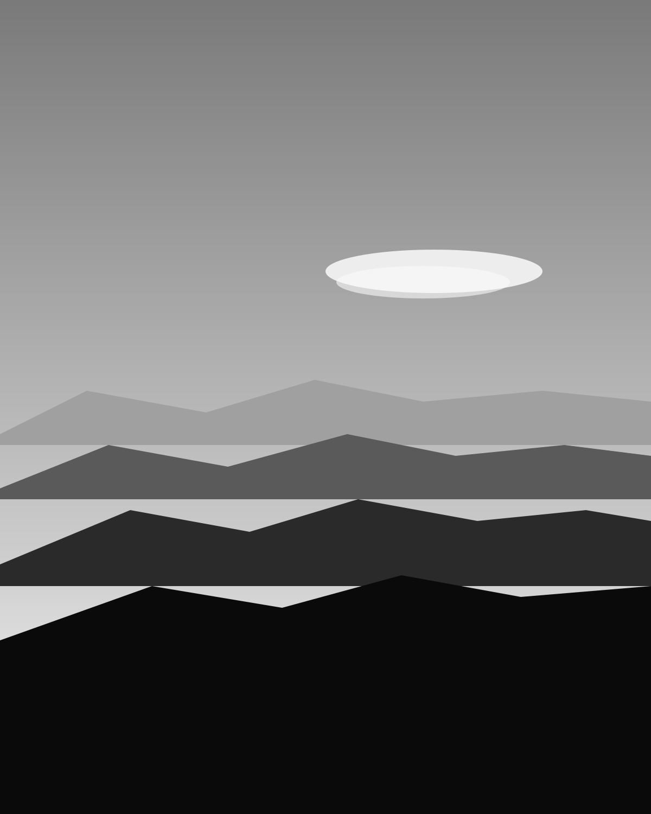

The work
of looking
twicevol. 42
Recto is the working archive of a photographer based between New York, Athens, and the unmarked apartment in Lisbon nobody is supposed to know about. The work is mostly black-and-white, mostly slow, mostly about how a place reveals itself when you stop trying to make it.
Studio
By appointment
Represented by
Self & the kindness of editors
№ 042 / Current
Cyclades, in three visits.

"The wall is the same wall it was in 1972. The light is the same light it has always been. Only the photographer has changed, and only a little, and only in the ways that matter least."
Read the essay →Latest six series.


A short statement
Photography is mostly waiting and a small number of decisions, made quickly, that you spend the rest of the year looking at. The work, here, is the looking. The pictures are the residue.
— Iris Kallas · April 2026 · Athens
From the journal.
-
N. 14
On the second visit to Tinos.
14 April 2026 → -
N. 13
Why I went back to film, again.
22 March 2026 → -
N. 12
The portrait that didn't happen.
8 February 2026 → -
N. 11
Three rolls in the Argolid.
19 January 2026 →
Selected press
- Aperture · 244
- Cereal · Vol. 26
- The British Journal of Photography
- Fisheye · 187
- Apartamento
A note on commissions